Historische Stockwerksanzeige im Art déco, die statt der Etagen FREI oder BESETZT zeigt (zum Beispiel über einer Tür). Ein Servo schwenkt den Zeiger zwischen FREI und BESETZT, gesteuert von einem Präsenzmelder. Diese Anleitung führt dich vom Laserschnitt bis zur Wand.
Größe
366 × 275 mm, 38 mm tief
Holz
4 mm Sperrholz, 3 Teile
Druck
Kästchen + 4 Hülsen, PETG/ASA
Strom
USB-Netzteil 5 V
Zwei Varianten der Montage
Die Schritte 6, 12 und 13 beschreiben die ursprüngliche Variante mit Abstandshülsen und Schrauben von vorn (3d-print/legacy/). Neuer und im README beschrieben ist die Montage ohne Schrauben von vorn: Hülsen als Schlüssellöcher (hook-sleeves-4x.stl), Wandschrauben nach laser/wall-hook-drill-template.svg, Deckel hinten (lid-nodemcu.stl) und ein NodeMCU statt D1 mini.
1Teile und Werkzeug
Sechs Gruppen von Teilen ergeben die fertige Anzeige. Die Dateien liegen im Repository (laser/, 3d-print/, home-assistant/).
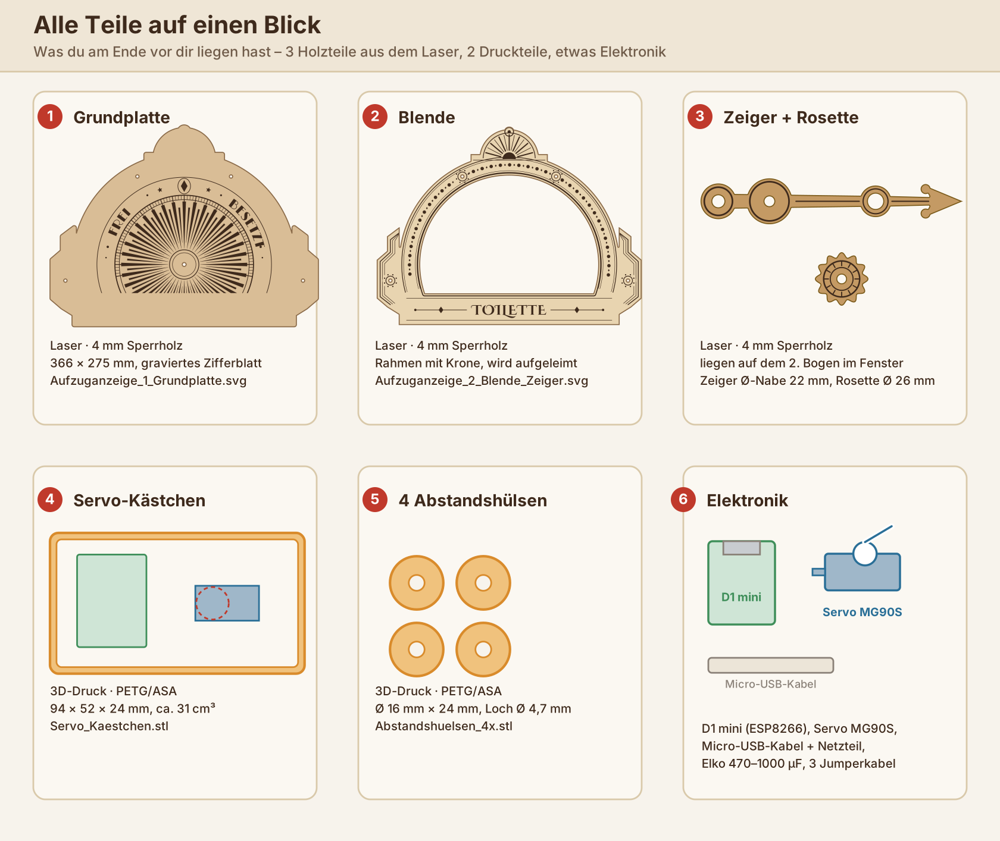
Bild 0Alle Teile im Überblick
Material
Wofür
Sperrholz 4 mm, 2 Platten à 380 × 290 mm
Grundplatte, Blende, Zeiger, Rosette
Holzleim D3, 2K-Epoxid oder Montagekleber
Holz auf Holz / Druckteile auf Holz
Beize Nussbaum, Goldwachs, Hartwachsöl oder Klarlack matt
Der Servo MG90S ist die Grundlage der Druckdateien. Messe ihn nach, sobald er da ist (Schritt 9). Manche Händler geben „90°“ im Datenblatt an. Der Zeiger braucht etwa 115° Schwenkweg, prüfe vor dem Bestellen, ob der Servo das schafft.
2Lasern
Zwei Bögen mit je 378 × 288 mm. Schwarz ist Flächengravur, Rot ist Schnitt. Erst gravieren, dann schneiden, die Platte dabei nicht bewegen.
laser/01_base-plate.svg
laser/02_bezel-pointer.svg
xTool M2
Mach einen Testschnitt am Reststück: Schnitt geht durch? Gravurtiefe passt? Der Strahlenkranz ist eine große Gravurfläche und dauert.
Bogen 1 (Grundplatte) lasern.
Bogen 2 lasern. Er enthält Blende, Zeiger und Rosette. Zeiger und Rosette liegen im Fenster der Blende, damit kein Holz verschwendet wird.
Brandränder mit K240 leicht abschleifen, besonders an den kleinen Zeigerteilen.
Zeigerloch
Das Nabenloch des Zeigers ist im Laser-SVG nur 5,3 mm groß. In Schritt 11 wird es auf den Durchmesser des Servo-Horns aufgebohrt. Alternativ setzt du das Nabenloch in der SVG-Datei vor dem Lasern direkt auf Hub-Ø + 0,3 mm (meist 8 mm).
3Oberfläche
Die Grundplatte wird dunkel, die Blende bleibt hell, Krone, Zeiger und Rosette bekommen Gold.
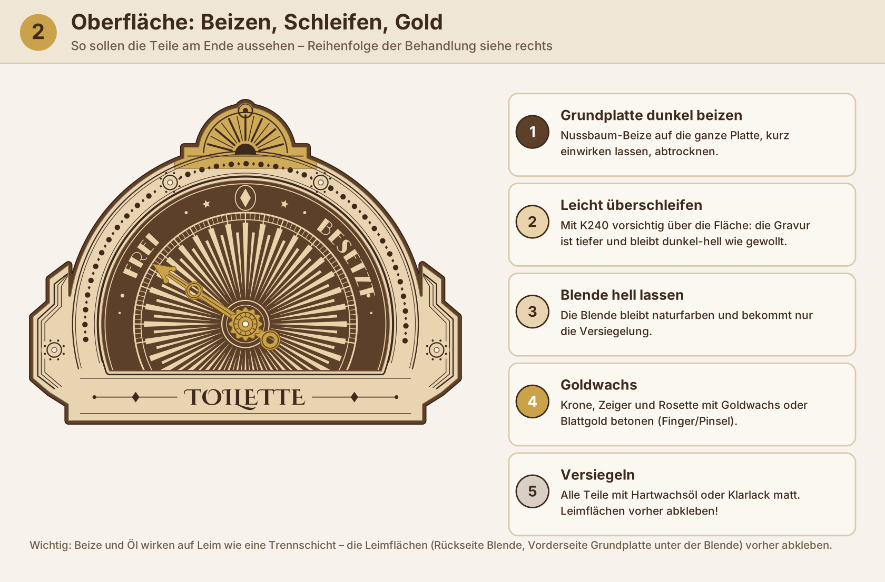
Bild 1So sollen die Teile aussehen, Reihenfolge rechts
Beize
K240
Goldwachs
Hartwachsöl / Klarlack
Malerband
Klebe die Leimflächen mit Malerband ab: die Rückseite der Blende und den Bereich der Grundplatte, auf den die Blende kommt. Beize und Öl wirken wie eine Trennschicht und der Leim hält dort später nicht.
Grundplatte mit Nussbaum-Beize streichen, kurz einwirken lassen, abwischen, trocknen lassen.
Mit K240 vorsichtig überschleifen. Die Fläche wird heller, die tiefere Gravur bleibt dunkel.
Goldwachs mit dem Finger auf Krone, Zeiger und Rosette auftragen und polieren.
Alle Teile mit Hartwachsöl oder mattem Klarlack versiegeln, am Ende Malerband entfernen.
4Drehpunktloch aufbohren
Der Servo kommt hinter die Grundplatte. Sein Wellenbund steckt später im Drehpunktloch, deshalb wird es von 5,3 auf 12 mm vergrößert. Mach das vor dem Verleimen, solange die Platte flach liegt.
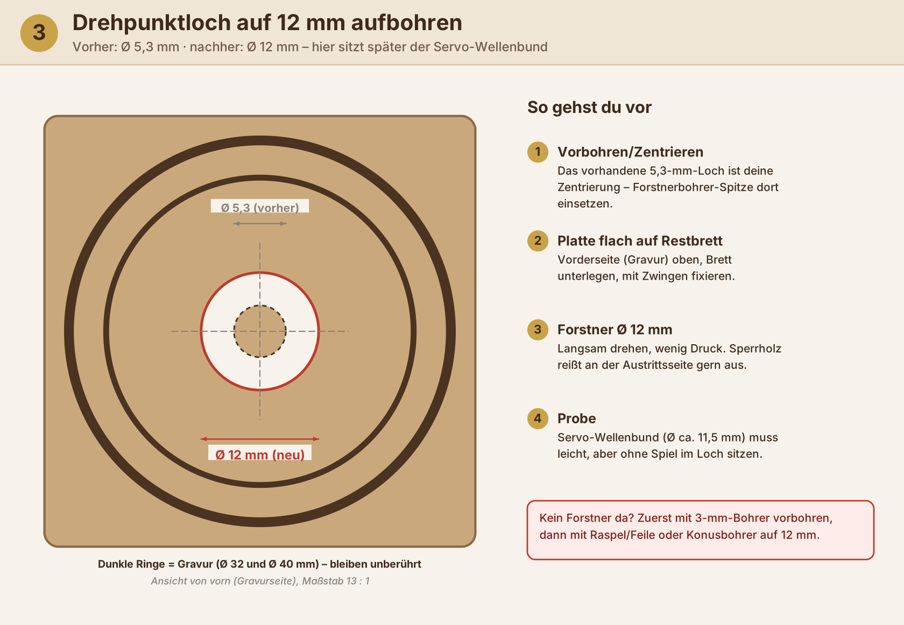
Bild 2Vorher Ø 5,3 mm, nachher Ø 12 mm, Maßstab 13 : 1
Forstnerbohrer 12 mm
Restbrett
Zwingen
Platte mit der Gravurseite nach oben auf ein Restbrett legen und festspannen.
Die Spitze des Forstnerbohrers in das vorhandene Loch setzen.
Langsam und mit wenig Druck bohren. Sperrholz reißt an der Austrittsseite gern aus, das Restbrett darunter verhindert das.
Prüfe das Loch mit dem Wellenbund des Servos (Ø ca. 11,5 mm). Er soll leicht, aber ohne Spiel hineinpassen.
Kein Forstner da
Mit 3 mm vorbohren und mit Raspel oder Konusbohrer auf 12 mm erweitern. Die dunklen Gravurringe liegen weit außen (Ø 32 mm) und werden nicht berührt.
5Blende aufleimen
Die vier Befestigungslöcher sind Passstifte: mit Schrauben als Stiften sitzt die Blende exakt.
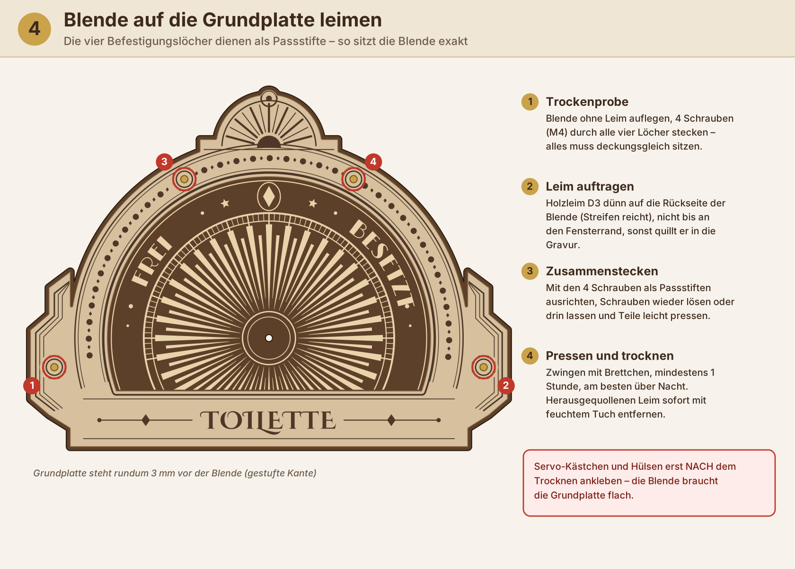
Bild 3Die Grundplatte steht rundum 3 mm vor, so entsteht die gestufte Kante
Holzleim D3
4 Schrauben M4 als Passstifte
Zwingen + Brettchen
feuchtes Tuch
Probe ohne Leim: Blende auflegen, vier Schrauben durch alle Löcher stecken. Alles muss deckungsgleich sitzen.
Leim dünn auf die Rückseite der Blende geben, nicht bis an den Fensterrand. Sonst quillt er in die Gravur.
Zusammenstecken, mit den Schrauben ausrichten, leicht pressen.
Mindestens eine Stunde pressen, besser über Nacht. Herausgequollenen Leim sofort mit feuchtem Tuch entfernen.
Reihenfolge
Kästchen und Hülsen erst ankleben, wenn die Blende trocken ist. Die Platte muss beim Pressen flach liegen.
6Druckteile drucken
Während der Leim trocknet, kann der Drucker laufen: ein Servo-Kästchen und vier Abstandshülsen.
servo-box-nodemcu.stl
lid-nodemcu.stl
hook-sleeves-4x.stl
PETG oder ASA
OrcaSlicer
Einstellung
Wert
Material
PETG oder ASA. PLA geht, wird über der Tür aber warm und weich.
Lage
So lassen, wie die Dateien kommen. Kästchen mit der geschlossenen Vorderseite aufs Bett, Hülsen stehend.
Stützen
Keine nötig
Schicht / Wände / Füllung
0,2 mm · 3 Wände · 20–25 %
Maße
Kästchen 94 × 52 × 24 mm, Hülsen Ø 16 × 24 mm, Loch Ø 4,7 mm
Vor dem Druck
Die Datei ist für diese Servo-Maße gerechnet: Welle 6,0 mm vom Ende, Lochabstand der Laschen 27,8 mm, Laschen 4 mm unter der Oberkante. Wenn dein Servo abweicht, passe die Konstanten oben in source/druck.py bzw. druck_nodemcu.py an und erzeuge die STL neu (python3 druck_nodemcu.py <Zielordner>, benötigt trimesh, manifold3d, numpy).
7Elektronik am Tisch testen
Teste Servo und Software, bevor etwas verklebt ist. So findest du Fehler, solange alles noch offen ist.
D1 mini
Servo
Micro-USB
ESPHome
elevator-indicator-nodemcu.yaml
Kopiere home-assistant/secrets.yaml.example nach secrets.yaml und trage deine WLAN-Daten ein. Öffne in ESPHome die Datei elevator-indicator-nodemcu.yaml (oder -d1mini.yaml).
Flashe den D1 mini zum ersten Mal per USB, ohne angeschlossenen Servo. Danach geht alles per WLAN (OTA).
Das Gerät „Elevator Indicator“ erscheint in Home Assistant. Dort gibt es den Schalter „Besetzt“ und zwei Regler „Zeiger FREI“ und „Zeiger BESETZT“ (Bereich −100 bis 100). Die Startwerte sind nur grob, die Endwerte stellst du in Schritt 11 am fertigen Zeiger ein.
Strom aus, Servo anschließen (Schritt 8), Strom ein. Der Servo fährt auf FREI. Schalte „Besetzt“ ein und aus und beobachte die Bewegung (1,5 Sekunden, danach stromlos).
Nach zwei Sekunden wird der Servo stromlos. So brummt und zittert er im Ruhezustand nicht, und der Zeiger bleibt durch die Getriebereibung stehen.
8Verdrahten
Drei Leitungen und ein Elko. Der D1 mini holt sich den Strom aus dem USB-Kabel und gibt ihn mit 5 V an den Servo weiter.
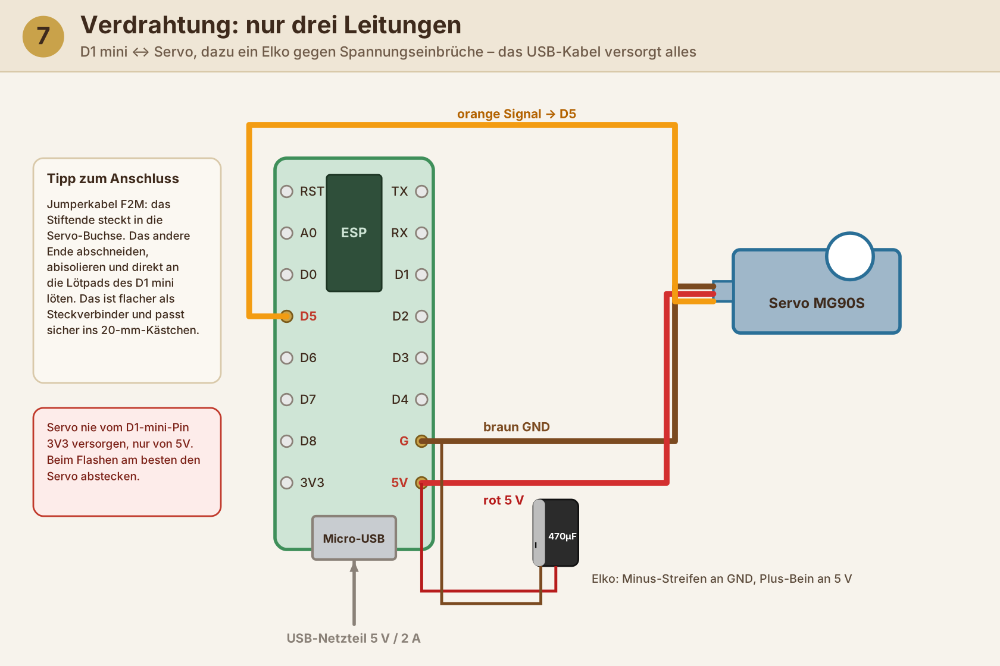
Bild 4Servo-Kabel: braun an G, rot an 5V, orange an D5; Elko parallel an 5V und G
Lötkolben
Schrumpfschlauch
3 Jumperkabel F2M
Elko 470–1000 µF
Das Stiftende eines Jumperkabels steckt in die Servo-Buchse. Das andere Ende abschneiden und abisolieren.
Löte die Enden an die Pads des D1 mini: braun an G, rot an 5V, orange an D5. Das ist flacher als Steckverbinder und passt sicher ins 20-mm-Kästchen.
Löte den Elko parallel zwischen 5V und G. Der Streifen am Elko markiert Minus und gehört an G.
Schrumpfschlauch über die Lötstellen, kein Kontakt zwischen den Leitungen.
Nie vom 3V3-Pin
Der Servo wird nur mit 5 V versorgt. Zum Flashen und Programmieren ziehst du den Servo am besten ab.
9Servo ins Kästchen
Das Kästchen hält den Servo im Drehpunkt und trägt den D1 mini. Von hinten schaust du in den offenen Innenraum.
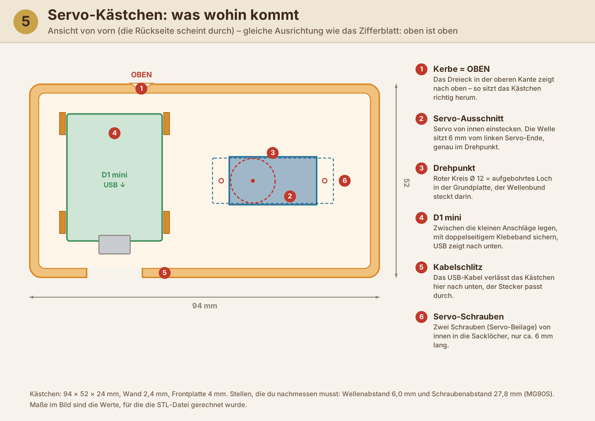
Bild 5Ansicht von vorn, die Rückseite scheint durch
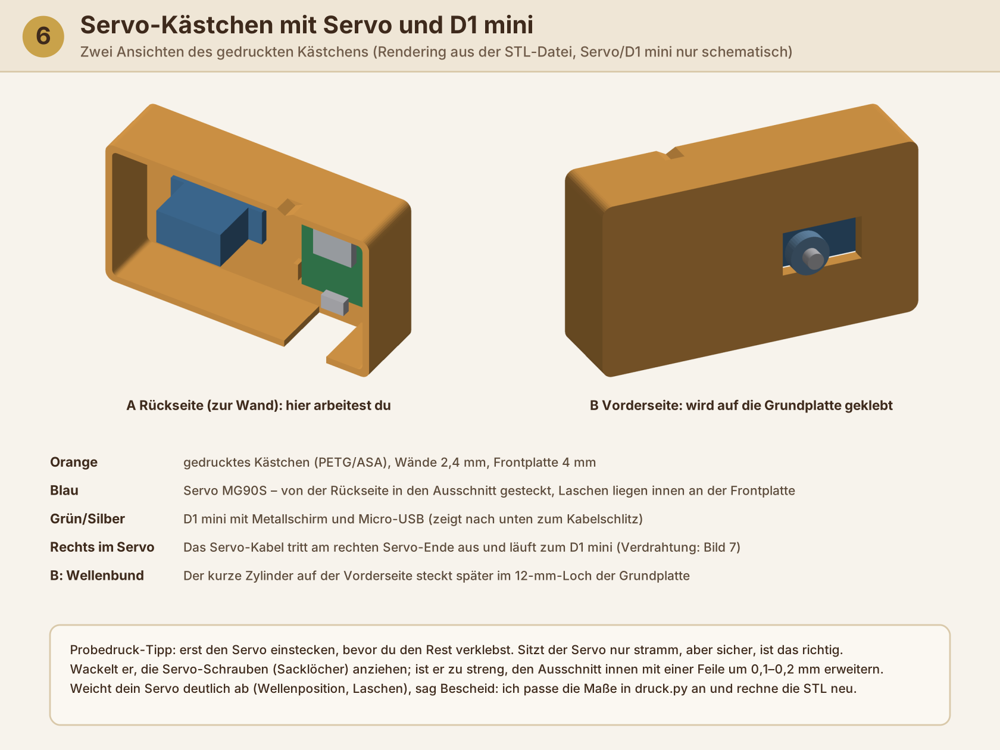
Bild 6Rendering aus der STL-Datei mit Servo und D1 mini
Miss den Servo nach: Abstand Wellenmitte bis nächste Stirnseite (6,0 mm), Abstand der Laschenlöcher (27,8 mm), Höhe Lasche bis Gehäusedeckel (ca. 4 mm).
Servo von innen in den Ausschnitt stecken, das Servo-Kabel zeigt zum rechten Ende. Er sitzt stramm, aber ohne Gewalt. Ist er zu streng, den Ausschnitt innen mit einer Feile um 0,1–0,2 mm erweitern.
Mit den beiden Servo-Schrauben von innen in die Sacklöcher schrauben. Länge nur ca. 6 mm, sonst kürzen.
D1 mini zwischen die Anschläge legen, USB nach unten zum Kabelschlitz, und mit doppelseitigem Klebeband fixieren.
Die Kerbe in der oberen Kante markiert OBEN.
10Trockenprobe und Kästchen kleben
Hier zeigt sich, ob Servo, Loch und Zeiger-Höhe zusammenpassen. Erst danach wird geklebt.
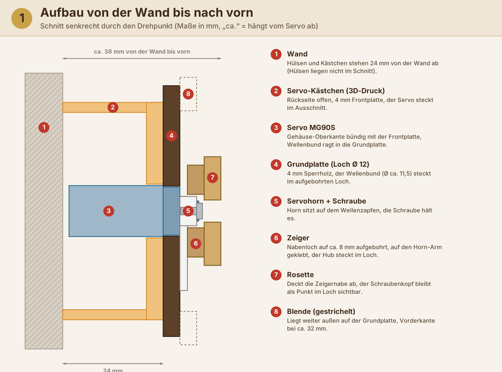
Bild 7Schnitt durch die Achse, von der Wand bis zur Rosette. „ca.“-Maße hängen von deinem Servo ab
Kästchen mit Servo ohne Kleber von hinten an die Grundplatte halten. Der Wellenbund muss leicht im 12-mm-Loch sitzen, das Kästchen liegt plan an.
Prüfe, wie weit der Zapfen vorne herausragt. Das Horn muss frei über der Vorderkante der Blende liegen (ca. 32 mm). Reicht der Zapfen nicht, hilft eine dünne Unterlegscheibe unter dem Horn.
Kerbe nach oben, Kabelschlitz nach unten. Der Wellenbund im Loch richtet das Kästchen von selbst aus.
Klebefläche mit grobem Papier anrauen (PETG haftet schlecht). Dann mit 2K-Epoxid oder Montagekleber auf der Rückseite der Grundplatte festkleben und aushärten lassen.
11Zeiger montieren
Der Zeiger sitzt auf dem Servo-Horn. Der Servo steht dabei auf FREI, dann zeigt der Zeiger auch dorthin.
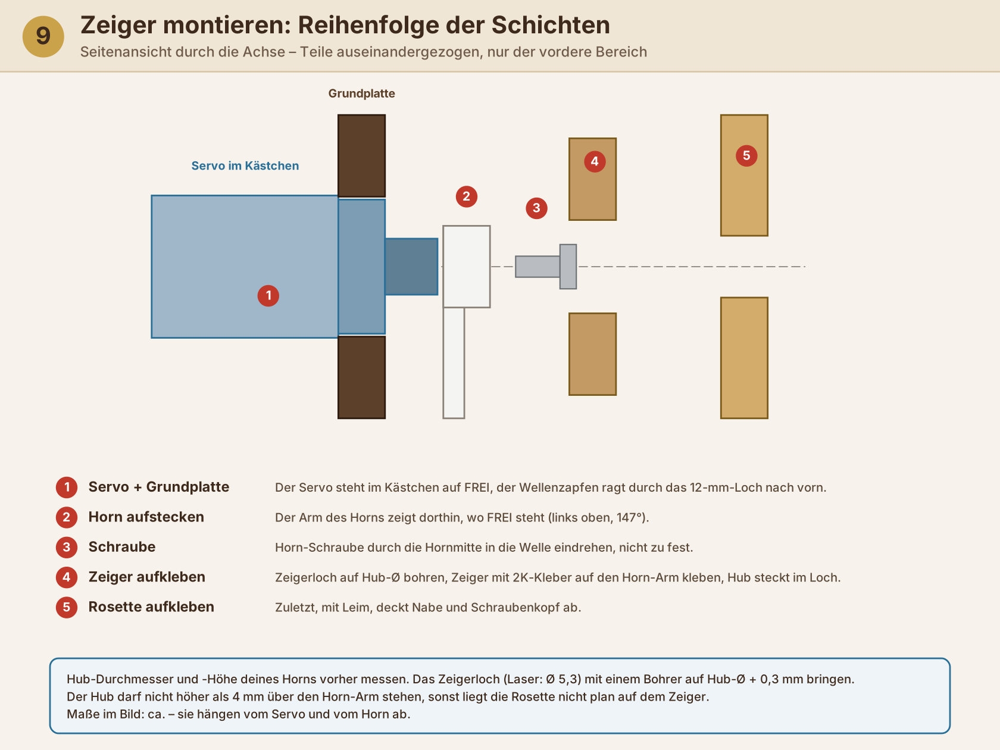
Bild 8Schichten von hinten nach vorn, auseinandergezogen
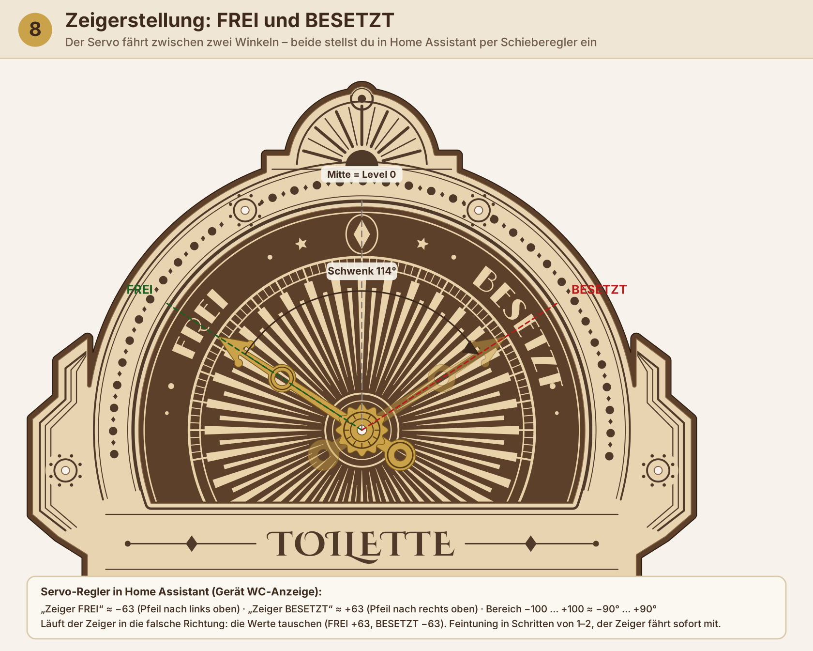
Bild 9FREI bei 147°, BESETZT bei 33°, Mitte = Level 0
Servo-Horn
Horn-Schraube
Bohrer ca. 8 mm
2K-Kleber
Leim
Strom einschalten. Der Servo fährt auf FREI und bleibt dort stehen.
Horn so aufstecken, dass sein Arm nach links oben zeigt (147°, dorthin, wo die Spitze auf FREI stehen soll). Horn-Arm auf ca. 15–20 mm kürzen.
Horn-Schraube eindrehen, nicht zu fest.
Messe Hub-Durchmesser und -Höhe des Horns. Das Zeigerloch auf Hub-Ø + 0,3 mm aufbohren (meist ca. 8 mm), Zeiger in Zwingen spannen.
Zeiger mit 2K-Kleber auf den Horn-Arm kleben, Spitze in Richtung des Horn-Arms. Der Hub steckt im Loch.
Zuletzt die Rosette mit Leim aufsetzen. Sie deckt Nabe und Schraubenkopf ab, der Schraubenkopf bleibt als Punkt im Loch sichtbar.
Feinabstimmung in Home Assistant mit den Reglern „Zeiger FREI“ und „Zeiger BESETZT“. Schalte „Besetzt“ ein und aus und ändere den jeweils aktiven Regler in Schritten von 5–10, später 1–2. Der Zeiger fährt sofort mit. Beim gebauten Original (Stand 12.11.2026, an der Wand) passen FREI = 100 und BESETZT = −50. Dein Aufbau liegt je nach Horn-Stellung etwas daneben.
Hubhöhe
Der Hub darf nicht höher als 4 mm über den Horn-Arm stehen, sonst liegt die Rosette nicht plan auf dem Zeiger. Dann Rosette weglassen oder das Zeigerloch tiefer ansenken.
Läuft der Zeiger falsch herum
Tausche die Vorzeichen der beiden Werte, oder stecke das Horn um einen Zahn versetzt auf. Stößt FREI bei 100 an, bringt ein versetztes Horn mehr Weg.
12Hülsen ankleben
Die vier Hülsen halten die Anzeige 24 mm von der Wand und lassen das Kästchen dazwischen Platz.
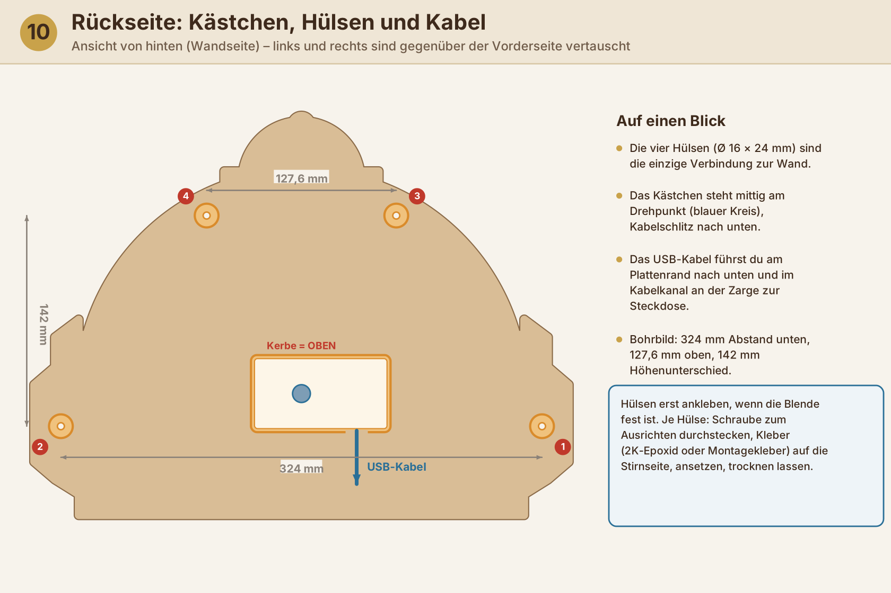
Bild 10Ansicht von hinten, links und rechts sind gegenüber der Vorderseite vertauscht
Pro Hülse eine Schraube durch Hülse und Befestigungsloch stecken, damit sie senkrecht zur Platte steht.
Stirnseite anrauen, Kleber (2K-Epoxid oder Montagekleber) auftragen, ansetzen, aushärten lassen.
Das USB-Kabel führst du später durch den Schlitz im Kästchen am Plattenrand nach unten.
13An die Wand schrauben
Mittig über der Tür, Unterkante 5–10 cm über der Zarge. Die Anzeige passt aber überall.
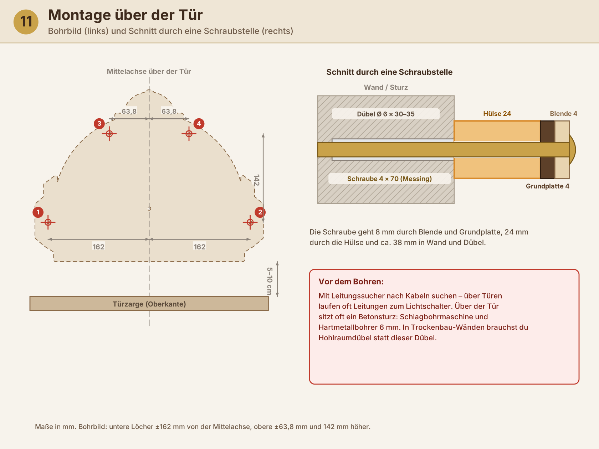
Bild 11Bohrbild und Schnitt durch eine Schraubstelle
Wasserwaage
Leitungssucher
Schlagbohrmaschine
Bohrer 6 mm
4 Dübel Ø 6
Zuerst suchen
Mit dem Leitungssucher nach Kabeln suchen. Über Türen laufen oft Leitungen zum Lichtschalter. In Trockenbau-Wänden brauchst du Hohlraumdübel statt der Dübel für Massivwände.
Anzeige mit Wasserwaage anhalten. Durch die Hülsen die vier Löcher anzeichnen. Maße: unten ±162 mm von der Mittelachse, oben ±63,8 mm, 142 mm Höhenunterschied.
Löcher bohren, Dübel einsetzen.
USB-Kabel am Kästchen einstecken, durch den Schlitz nach unten legen und im Kabelkanal zur Steckdose führen.
Schrauben 4 × 70 durch Blende, Grundplatte und Hülse in den Dübel drehen und nur handfest anziehen.
14Präsenzmelder und Automation
Der Melder im Raum meldet „Anwesend“, die Automation setzt den Zeiger.
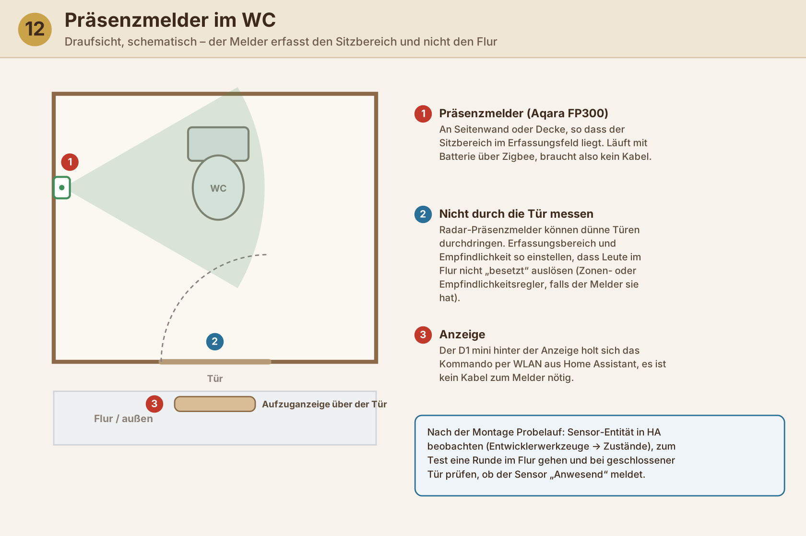
Bild 12Schematische Draufsicht
Melder per Zigbee2MQTT in Home Assistant einbinden und im Raum an Seitenwand oder Decke montieren, so dass der gewünschte Bereich im Erfassungsfeld liegt.
Automation aus home-assistant/automation.yaml anlegen und die Entitäten anpassen: binary_sensor.presence_sensor, switch.elevator_indicator_besetzt und optional media_player.dining_room_speaker.
Der Ablauf: Anwesenheit (oder Licht an) → sofort BESETZT. 5 Sekunden ohne Anwesenheit und ohne Licht → FREI. Neue Bewegung in diesen 5 Sekunden bricht den Rücklauf ab (mode: restart). Beim Start von Home Assistant wird der Zustand abgeglichen.
Fahrstuhl-Ping (optional): Lade eine kurze Datei elevator-ding.mp3 (eine eigene Datei; sie liegt nicht im Repo) (ca. 3 s) in Home Assistant unter Medien → Lokale Medien hoch. Hänge nach dem Umschalten 2 Sekunden Pause an (der Servo braucht 1,5 s) und dann media_player.play_media mit media-source://media_source/local/elevator-ding.mp3 an einen Lautsprecher. Ohne den Zusatz announce: Mit announce: true blieb der HomePod über Music Assistant stumm. Laufende Musik wird vom Ping unterbrochen. Umschließe beides mit der Bedingung „Schalter war vorher aus“ bzw. „war vorher an“, damit es nur beim echten Wechsel klingelt. Der Ping läuft mit der Lautstärke des Lautsprechers, stelle sie moderat ein.
Durch die Tür
Radar-Melder können dünne Türen durchdringen. Stelle Erfassungsbereich und Empfindlichkeit so ein, dass Personen im Flur nicht „besetzt“ auslösen. Probe: bei geschlossener Tür im Flur herumgehen und den Sensor beobachten.
15Checkliste und Fehlersuche
Grundplatte gelasert, Pivot-Loch auf 12 mm aufgebohrt
Blende verleimt, Zeiger und Rosette lackiert und gewachst
Servo am Tisch getestet, Zeiger fährt FREI und BESETZT
Kästchen auf der Grundplatte, Kerbe oben, Kabelschlitz unten
Hülsen angeklebt, Schrauben 4 × 70 liegen bereit
Leitungssucher benutzt, Dübel gesetzt
Automation: Präsenz → BESETZT, 5 s frei → FREI (Ping nur beim echten Wechsel)
Zeigerwerte in Home Assistant eingestellt (Original: FREI 100, BESETZT −50)
Symptom
Ursache und Abhilfe
Zeiger zittert
Elko fehlt oder ist zu klein, oder das Netzteil ist zu schwach. 1000 µF und 2 A probieren.
D1 mini startet beim Schwenken neu
Spannungseinbruch, gleiche Abhilfe wie oben, Kabel kürzer oder dicker.
Zeiger läuft zur falschen Seite
Vorzeichen der beiden Werte tauschen.
Zeiger erreicht die Skala nicht
Regler in Home Assistant nachstellen, sonst Horn um einen Zahn versetzen.
Servo brummt
Prüfen, ob auto_detach_time in der Konfiguration steht.
Sensor flackert
Erfassungsbereich verkleinern. Flackert der Zeiger trotz 5 s Verzögerung weiter, die Verzögerung auf 10–20 s erhöhen.
Anzeige wackelt an der Wand
Schrauben nur handfest, Dübel prüfen, Hülsen sitzen plan an der Platte.